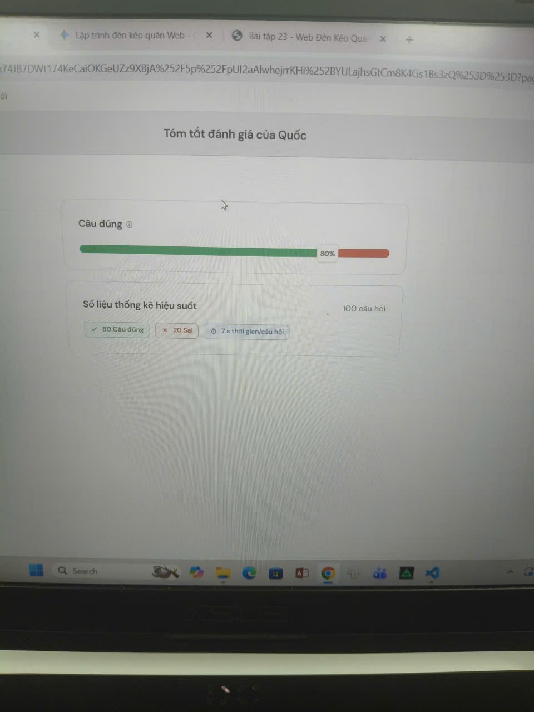

Bài tập 22 · Kết quả
Màn hình kết quả Bài tập 22
Ảnh được thêm theo yêu cầu ở bài trước. Hãy thay bằng ảnh kết quả chính thức nếu giảng viên yêu cầu ảnh khác.

Trịnh Quốc Ba · MSSV: 241A010297
Ảnh được thêm theo yêu cầu ở bài trước. Hãy thay bằng ảnh kết quả chính thức nếu giảng viên yêu cầu ảnh khác.

Trịnh Quốc Ba · MSSV: 241A010297